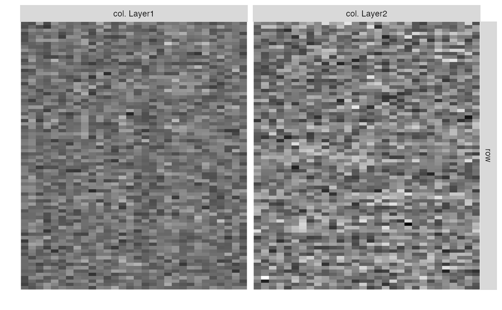
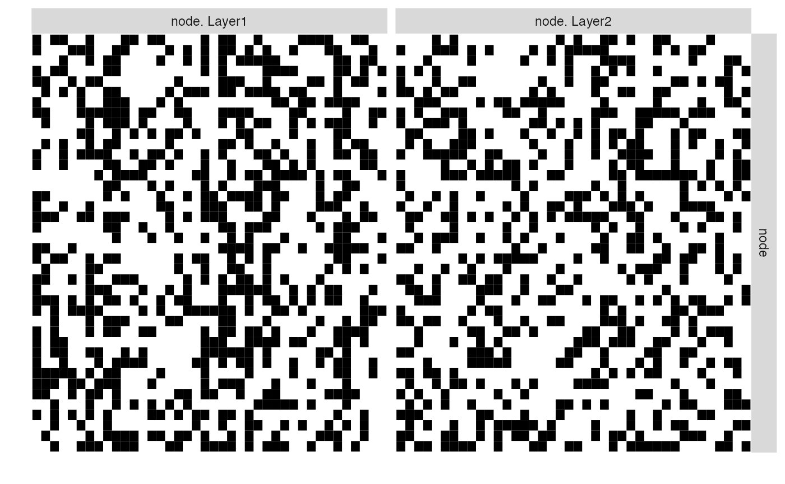
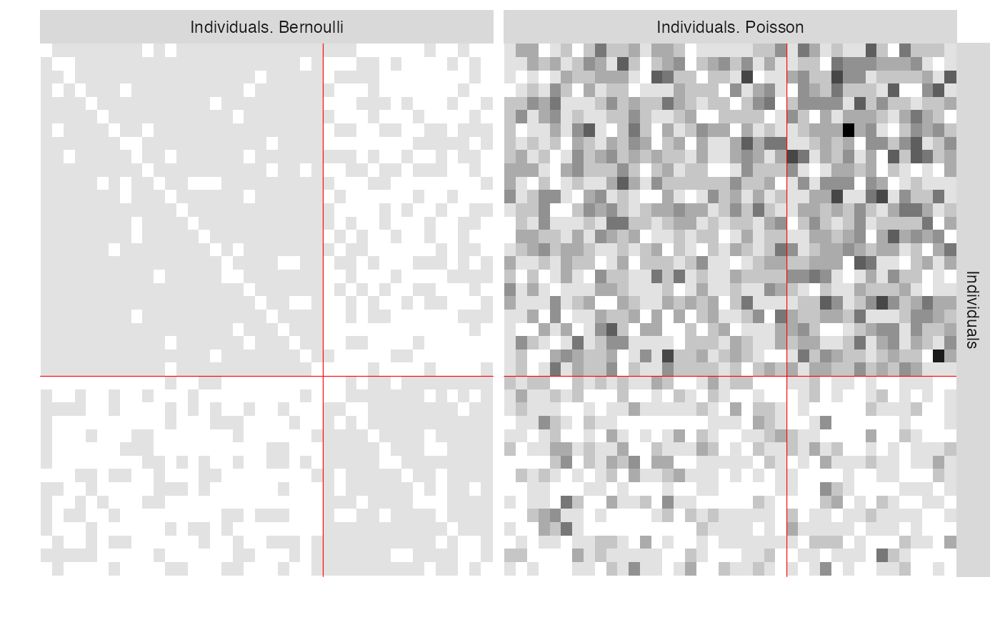
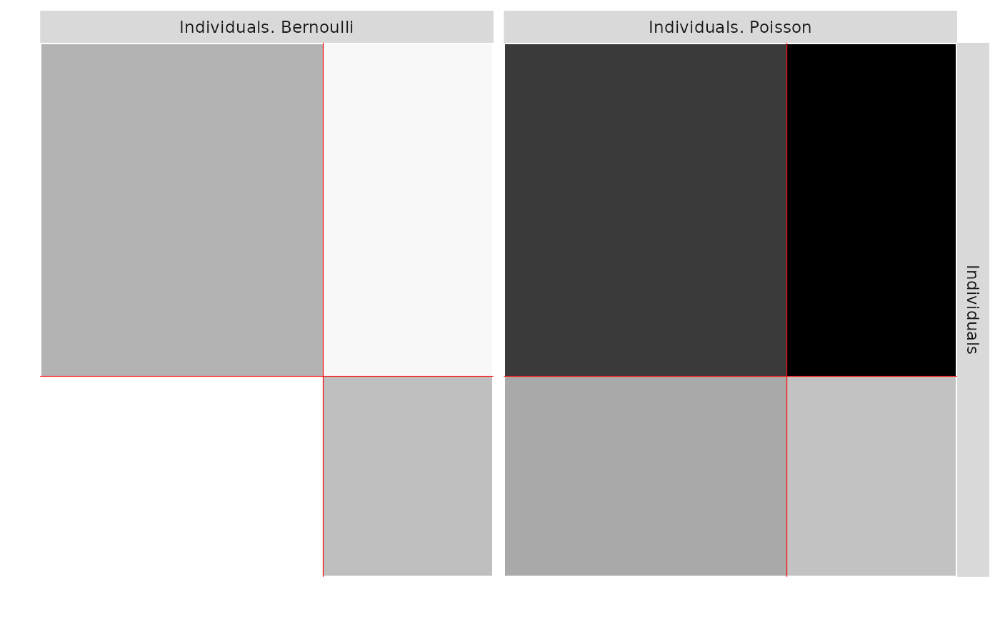
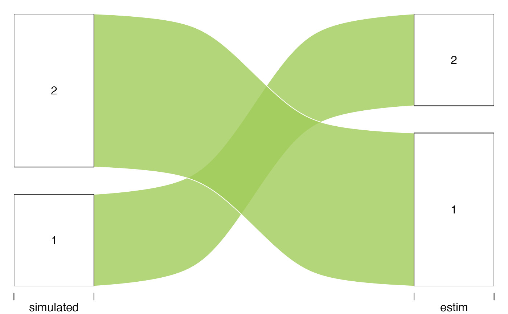
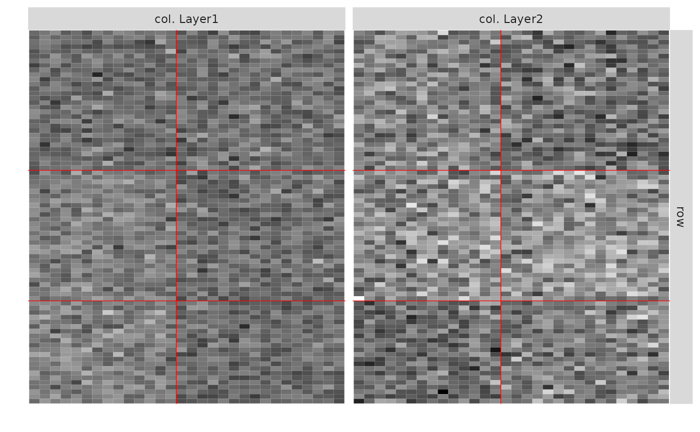

Stochastic Block Models for Multiplex networks
Principle and illustration
team großBM
2021-06-09
Source:vignettes/MultiplexNetwork_principle.Rmd
MultiplexNetwork_principle.RmdPreliminaries
This vignette illustrates the use of the estimateMultiplexSBM function and the methods accompanying the R6 classes multiplexSBMfit.
Multiplex network data
Multiplex networks refer to a collection of networks involving the same sets of nodes, each network corresponding to a give type of interaction. Each network may also be referred as a layer. Such a network is studied in Barbillon et al. (2017) where the nodes are researchers and two networks are provided:
* a network representing the relations of advices between researchers,
* a network representing the exchanges between the laboratories the researchers belong to. In Kéfi (2016), the nodes are species and each network corresponds to a type of ecological relation, namely trophic links, negative non trophic links and positive non trophic links.
Stochastic Block models for multiplex networks
General formulation of the model
We give here a few details on Stochastic Block Models (SBM) for multiplex networks.
Assume that one studies \(n\) nodes and observes \(L\) types of links, resulting into \(L\) matrices \((X^\ell_{ij})_{i,j = 1,\dots,n}\), $= 1, , L. Block models assume that the nodes are divided into \(K\) clusters, this clustering being encoded into the latent variables \((Z_i)_{i=1,\dots,n}\) such that \(Z_i = k\) if node \(i\) belongs to cluster \(k\).
The relations between nodes \(i\) and \(j\) are driven by the clusters they belong to :
\[ (X^1_{ij}, \dots,X^L_{ij}) | Z_i = q, Z_j = r \sim_{ind} \mathcal{F}(\cdot;\theta_{qr})\] where \(\mathcal{F}\) is a \(L\) dimensional probability distribution adapted to the data.
Examples
- If all the networks are binary (\(X^\ell_{ij} \in \{0,1\}\)) then \(\mathcal{F}\) is a \(L\)-variate Bernoulli distribution and \[ \theta_{qr} = (p^{\omega}_{qr}, \omega \in \{0,1\}^L)\] with \(p^{\omega_\ell}_{qr} \in [0,1]\).
- If all the networks are weighted with real values (\(X^\ell_{ij} \in \mathbb{R}\)) then \(\mathcal{F}\) could be a \(L\)-dimensional Gaussian distribution and \[ \theta_{qr} = (\mu_{qr},\Sigma_{qr})\] with \(\mu_{qr} \in \mathbb{R}^L\), \(\Sigma_{qr}\) a \(L\) covariance matrix.
Note that these two models assume that the \(L\) interactions are dependent conditionally to the clustering. The integration against the latent variables \(Z\) (clustering) implies that the interactions between two pairs of nodes are also dependent.
A collection of models are implemented in our package sbm. These models can be classified into two groups : either the layers are dependent conditionally to \(Z\) or not.
Dependent and independent layers conditionally to \(Z\).
We consider conditional dependence in a few numbers of models :
for \(L=2\) Binary networks (Bernoulli)
For any number \(L\) of layer with Gaussian multivariate distributions but restricted to \(\Sigma_{qr} = \Sigma\) (same covariance in any blocks)
In the Binary case, the number of parameters of dependent layers explodes with the number of layers \(L\) and the results become difficult to understand. As a consequence, we also implemented inference methods for independent layers conditionally to the clusterings for any number of layers.
In the case of independent layers conditionally to the clusters, we assume that for any \(\ell,i,j\), \[ X^\ell_{ij} | Z_i = q, Z_j = r \sim_{ind} \mathcal{F}_\ell(\cdot;\theta^\ell_{qr})\] where any \(\mathcal{F}_\ell\) can be Bernoulli, Poisson, Gaussian or Zero Inflated Gaussian.
Bipartite multiplex networks.
All the previous models can be extended to bipartite networks (i.e. when the nodes in row are different from the nodes in column). In that case, two clusterings are introduced. Assume that the row (respectively column) nodes are divided into \(K_1\) (resp. \(K_2\)) clusters, and denote \((Z^1_i)_{i=1,\dots,n}\) (resp. \((Z^2_j)_{i=j,\dots,p}\) ) the row (resp. col) clusterings.
The relations between nodes \(i\) and \(j\) are driven by the clusters they belong to :
\[ (X^1_{ij}, \dots,X^L_{ij}) | Z^1_i = q, Z^2_j = r \sim_{ind} \mathcal{F}(\cdot;\theta_{qr})\]
Inference
The maximization of the likelihood is obtained via a Variational version of the EM algorithm. The number of blocks is chosen via a penalized likelihood criterion (ICL).
See Barbillon et al. (2017) for details.
Note that, in the case of dependent networks, the inference is performed via the blockmodels package, while the GREMLINS package is used in the case of independent networks. As a consequence, the estimOptions arguments are slightly different.
Implementation
Data simulation
The function mySampleMultiplexSBM supplies a method to simulate multiplex networks. The argument dependent is set to FALSE by default (assuming independent layers conditionally to the clusterings).
We simulate hereafter \(2\) simple (i.e. non bipartite) layers. The corresponding matrices can be plotted using the function plotMyMultpiplexMatrix.
nbLayers <- 2Examples
- 2 directed Layers : one Poisson, one Bernoulli and two clusters
Nnodes <- 40
blockProp <- c(.4,.6)
set.seed(1)
connectParam <- list(list(mean=matrix(rbeta(4,.5,.5),2,2)),list(mean=matrix(rexp(4,.5),2,2)))
model <- c("bernoulli","poisson")
type <- "directed"
mySampleMultiplexSBM_PB <-
sampleMultiplexSBM(
nbNodes = Nnodes,
blockProp = blockProp,
nbLayers = nbLayers,
connectParam = connectParam,
model=model,
dimLabels = c('Individuals'), # generic name of the nodes
type=type,
seed = 1)
#> [1] "use of sampleMultipartite"
listSBM_PB <- mySampleMultiplexSBM_PB$listSBM
names(listSBM_PB) <- c("Bernoulli","Poisson")
plotMyMultiplexMatrix(listSBM_PB)
The resulting object is a list of SBM objects (of the SBM class). To build such an object from an observed matrix use the function defineSBM.
listSBM_PB
#> $Bernoulli
#> Fit of a Simple Stochastic Block Model -- bernoulli variant
#> =====================================================================
#> Dimension = ( 40 ) - ( 0 ) blocks and no covariate(s).
#> =====================================================================
#> * Useful fields
#> $nbNodes, $modelName, $dimLabels, $nbBlocks, $nbCovariates, $nbDyads
#> $blockProp, $connectParam, $covarParam, $covarList, $covarEffect
#> $expectation, $indMemberships, $memberships
#> * R6 and S3 methods
#> $rNetwork, $rMemberships, $rEdges, plot, print, coef
#> * Additional fields
#> $probMemberships, $loglik, $ICL, $storedModels,
#> * Additional methods
#> predict, fitted, $setModel, $reorder
#>
#> $Poisson
#> Fit of a Simple Stochastic Block Model -- poisson variant
#> =====================================================================
#> Dimension = ( 40 ) - ( 0 ) blocks and no covariate(s).
#> =====================================================================
#> * Useful fields
#> $nbNodes, $modelName, $dimLabels, $nbBlocks, $nbCovariates, $nbDyads
#> $blockProp, $connectParam, $covarParam, $covarList, $covarEffect
#> $expectation, $indMemberships, $memberships
#> * R6 and S3 methods
#> $rNetwork, $rMemberships, $rEdges, plot, print, coef
#> * Additional fields
#> $probMemberships, $loglik, $ICL, $storedModels,
#> * Additional methods
#> predict, fitted, $setModel, $reorder- 2 Bipartite Gaussian dependent Layers and three clusters
blockProp <- list(c(.3,.3,.4),c(0.5,0.5))
Q <- sapply(blockProp, function(p) length(p))
nbNodes <- c(80,30)
connectParam <- list()
connectParam$mu <- vector("list",nbLayers)
connectParam$mu[[1]] <- matrix(.1,Q[1],Q[2]) + matrix(c(1,1,1,0,1,0),Q[1],Q[2])
connectParam$mu[[2]] <- matrix(-2,Q[1],Q[2]) + matrix(c(1,3,2,1,2,3),Q[1],Q[2])
connectParam$Sigma <- matrix(c(2,1,0.1,4),nbLayers,nbLayers)
model <- rep("gaussian",2)
mySampleMultiplexSBM_GG <-
sampleMultiplexSBM(
nbNodes = nbNodes,
blockProp = blockProp,
nbLayers = nbLayers,
connectParam = connectParam,
model=model,
type="bipartite",
dependent=TRUE,
dimLabels = c('row','col'),
seed = 1)
listSBM_GG <- mySampleMultiplexSBM_GG$listSBM
plotMyMultiplexMatrix(listSBM_GG)
- 2 Bernoulli dependent Layers and 2 clusters
## MultiplexSBM Bernoulli with dependence
Q <- 2
set.seed(94)
P00<-matrix(runif(Q*Q),Q,Q)
P10<-matrix(runif(Q*Q),Q,Q)
P01<-matrix(runif(Q*Q),Q,Q)
P11<-matrix(runif(Q*Q),Q,Q)
SumP<-P00+P10+P01+P11
P00<-P00/SumP
P01<-P01/SumP
P10<-P10/SumP
P11<-P11/SumP
connectParam <- list()
connectParam$prob00 <- P00
connectParam$prob01 <- P01
connectParam$prob10 <- P10
connectParam$prob11 <- P11
model <- rep("bernoulli",2)
type <- "directed"
nbLayers <- 2
Nnodes <- 40
blockProp <- c(.6,.4)
mySampleMultiplexSBM <-
sampleMultiplexSBM(
nbNodes = Nnodes,
blockProp = blockProp,
nbLayers = nbLayers,
connectParam = connectParam,
model=model,
type=type,
dependent=TRUE,
seed = 1)
listSBM_BB <- mySampleMultiplexSBM$listSBM
plotMyMultiplexMatrix(listSBM_BB)
Inference
We are now able to perform inference on the each multiplex network (search of the “best” number of clusters in terms of ICL). To do so, we have to chose the model, i.e. the distribution used in each matrix and the dependence or independence between matrices conditionally to the clusters.
- 2 directed Layers : one Poisson, one Bernoulli and two clusters
res_PB <- estimateMultiplexSBM(listSBM_PB)
res_PB$storedModels#> indexModel nbParams nbBlocks ICL loglik
#> 1 1 9 2 -1926.202 -1894.847
#> 2 2 2 1 -2362.585 -2355.207One can now plot the reorganized matrices and the predicted values.
plot(res_PB)
plot(res_PB,type='expected')
One can also compare the estimated clusters to the simulated clusters. We recover the clusters perfectly.
All <- plotAlluvial(list(simulated = mySampleMultiplexSBM_PB$memberships$Individuals, estim=res_PB$memberships$Individuals))
All
#> $plotOptions
#> $plotOptions$curvy
#> [1] 0.3
#>
#> $plotOptions$alpha
#> [1] 0.8
#>
#> $plotOptions$gap.width
#> [1] 0.1
#>
#> $plotOptions$col
#> [1] "darkolivegreen3"
#>
#> $plotOptions$border
#> [1] "white"
#>
#>
#> $tableFreq
#> simulated estim Freq
#> 2 2 1 25
#> 3 1 2 15- 2 Gaussian bipartite dependent Layers with 3 row clusters and 3 col clusters.
res_GG <- estimateMultiplexSBM(listSBM_GG,dependent = TRUE,estimOptions = list(plot = FALSE,verbosity = 0 ))
res_GG$storedModels#> indexModel nbParams rowBlocks colBlocks nbBlocks ICL loglik
#> 5 5 18 3 2 5 -9467.993 -9394.099
#> 6 6 23 4 2 6 -9489.056 -9396.019
#> 7 7 28 5 2 7 -9509.624 -9397.443
#> 8 8 33 6 2 8 -9530.222 -9398.897
#> 4 4 13 2 2 4 -9543.194 -9488.444
#> 3 3 8 2 1 3 -9584.737 -9548.641
#> 2 2 5 1 1 2 -9667.705 -9642.276
#> 1 0 NA 0 0 0 NA NA
plot(res_GG)
- 2 Bernoulli dependent Layers
res_BB <- estimateMultiplexSBM(listSBM_BB,dependent = TRUE,estimOptions = list(plot = FALSE,verbosity = 0 ))
res_BB$storedModels#> indexModel nbParams nbBlocks ICL loglik
#> 2 2 13 2 -1836.174 -1786.056
#> 3 3 29 3 -1890.421 -1778.117
#> 4 4 51 4 -1963.078 -1764.451
#> 1 1 3 1 -2061.409 -2049.340References
Barbillon, Pierre, Sophie Donnet, Emmanuel Lazega, and Avner Bar-Hen. 2017. “Stochastic block models for multiplex networks: an application to a multilevel network of researchers.” Journal of the Royal Statistical Society Series A 180 (1): 295–314. https://ideas.repec.org/a/bla/jorssa/v180y2017i1p295-314.html.
Kéfi, Vincent AND Wieters, Sonia AND Miele. 2016. “How Structured Is the Entangled Bank? The Surprisingly Simple Organization of Multiplex Ecological Networks Leads to Increased Persistence and Resilience.” PLOS Biology 14 (8): 1–21. https://doi.org/10.1371/journal.pbio.1002527.